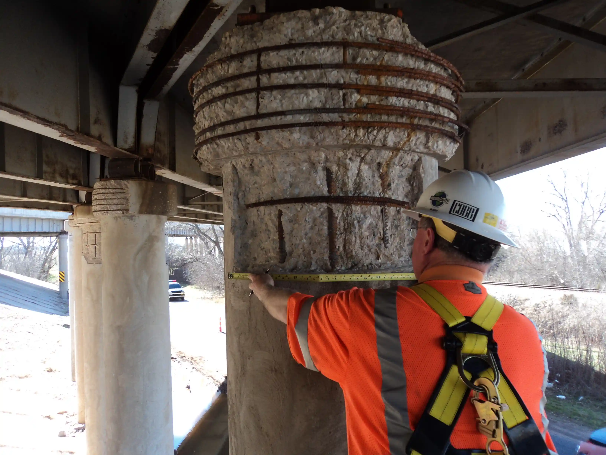
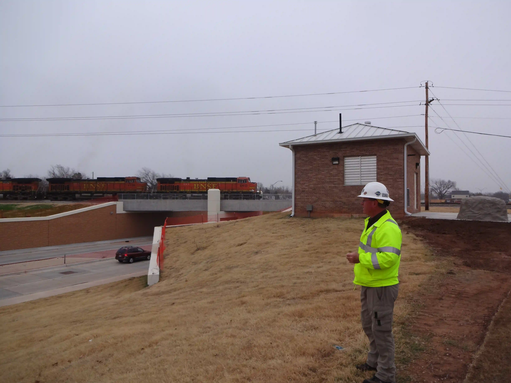
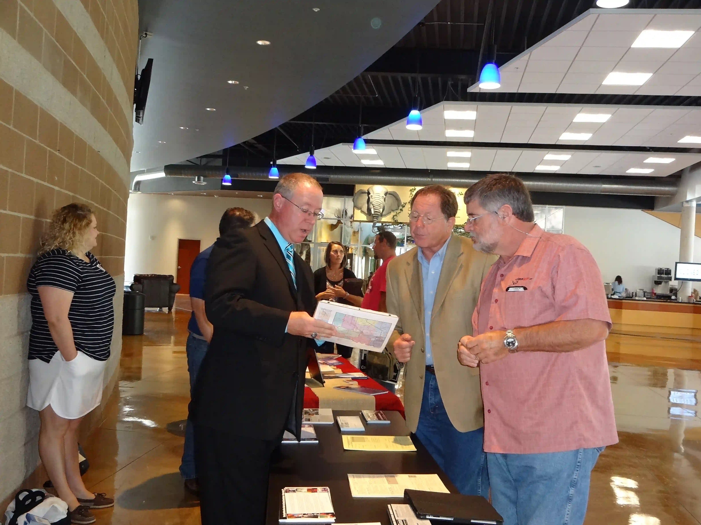
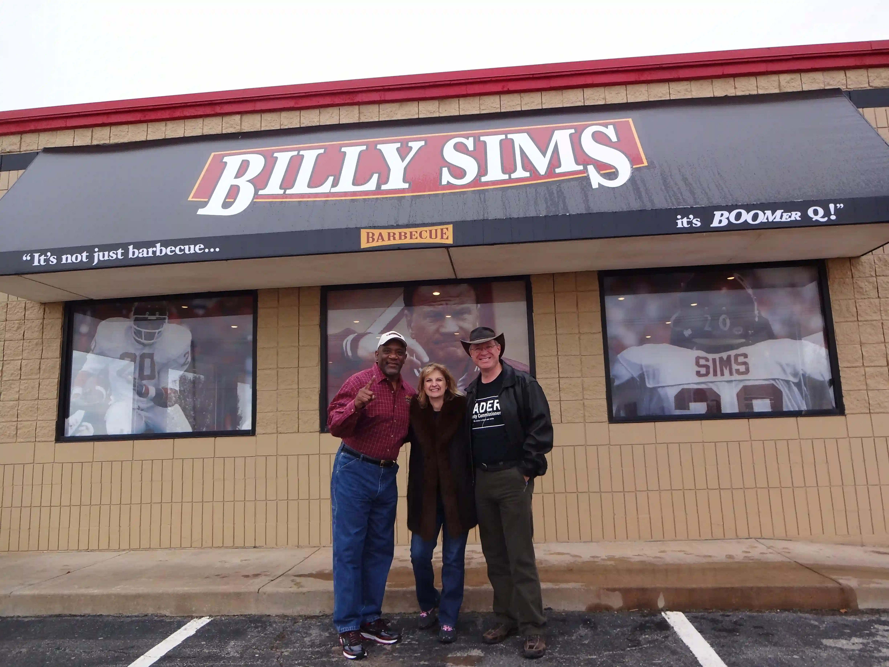
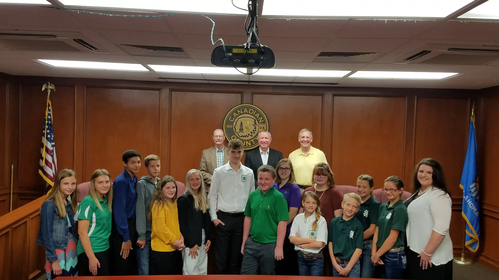

Your FULL-TIME County Commissioner
Marc Hader is dedicated to serving our community every day with experience, integrity, and a practical approach to solving local challenges. He works to ensure projects are completed efficiently, resources are managed responsibly, and residents’ voices are heard.
Guided by conservative values, Marc focuses on keeping promises, maintaining transparency, and making decisions that benefit families, businesses, and the community as a whole. His commitment is simple: to serve the people of our county with accountability, dedication, and care.

Sign Up for Text Alerts
By providing your mobile phone number you consent to receive recurring text messages from Friends of Marc Hader 2026. Message & Data Rates May Apply. Reply STOP to opt-out. Reply HELP for Help. Please read our privacy policy for more information.